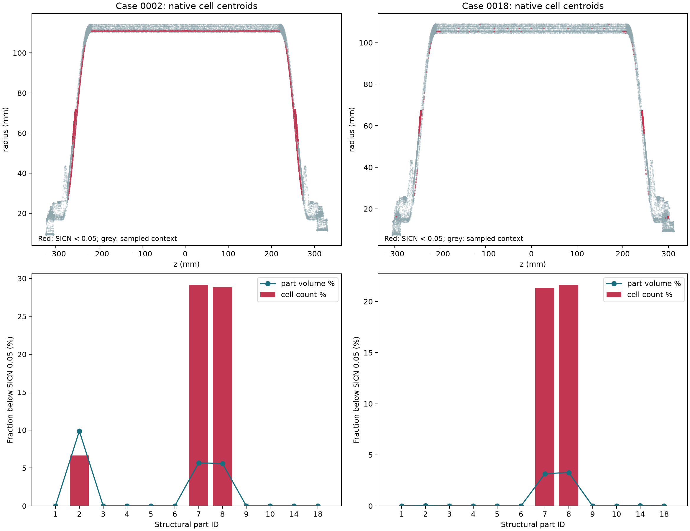

C04 / 失败与问题定位 / 2026-10-26
失败发生在哪里
本次诊断覆盖冻结输入 0000、0011、0002、0018：8 次分阶段建网、2 个已有场网格的原始单元定位、同一 CAD 面的边界投影检查。它们是诊断尝试，不计为新几何或训练样本；没有新增 GPU 求解，也没有修复完成的声明。
已证实的问题与证据边界
- 首轮失败在 Netgen 内部。0000、0011 首轮均发生 DLL 访问异常，不能据此断定 CAD 设计无效。
- Relocate3D 存在诱发翻转的实例。0000 的 stages_attempt002 初始网格无非正雅可比，节点移动后新增 5 个负值单元。下极区 part 8 的单元 889987 节点顺序不变，det J 从 +0.0540042 变为 −2.4289242；最大节点移动 1.61776 mm。这证明该流程存在风险；原历史失败没有阶段网格，不能断言每次都由同一步引起。
- 固定种子、单线程对照可重复。seed=1、单线程的两次诊断，各阶段几何及连接哈希完全一致；0000、0011 最终均为正雅可比。此结果仅适用于这两例、两次诊断，尚未通过完整拓扑、载荷与 FE 验收。
- “曲边雅可比”报错文字不准确。原重试实际设置为直边 TET10 几何。通用异常文字不能证明问题发生在曲边投影。
- 低质量单元集中在胶层与补强起始区。0002 的 14,106 个低质单元全部位于胶层及上下补强；0018 的 4,339 个中，4,198 个位于上下补强。补强起始增厚量在构造代码中为 0.03 mm，外轮廓分段锥面与内侧样条曲面之间形成很薄的过渡。
- 直边面片存在局部曲面表达误差。0002 补强部分面片中心距同一 CAD 面约 0.03～0.04 mm；抽查角节点距其 CAD 面约 10⁻⁷ mm。四面体体积与独立边界通量体积在浮点精度内一致，排除了简单求和错误。面片近似是体积偏差的贡献因素；抽样一阶修正不足以精确分摊全部误差。
SICN≥0.05、每材料区体积误差≤0.1% 是原项目筛选门槛，不是行业统一标准，也不是应力准确性的充分条件。历史生产放行记录仍为 0；诊断候选的正雅可比不等于新增合格标签。
原始失败记录
| 输入 ID | 历史尝试 | 原始异常 | 证据 |
|---|---|---|---|
| copv_c04_0000 | c04_research_v1 | OSError: exception: access violation reading 0x00000151F5766060 | 原始日志 |
| copv_c04_0000 | c04_research_retry_v1 | RuntimeError: Nonpositive curved Jacobians: -1.342186607800996 | 原始日志 |
| copv_c04_0011 | c04_research_v1 | OSError: exception: access violation reading 0x0000025495399FE0 | 原始日志 |
| copv_c04_0011 | c04_research_retry_v1 | RuntimeError: Nonpositive curved Jacobians: -0.06386350349475574 | 原始日志 |
8 次诊断的阶段记录
三列计数分别为初始建网、Relocate3D 后、直边升二次后的原始节点顺序 det J≤0 单元数。中间阶段的负方向可能在升阶时被重新定向，不能将中间计数直接当作最终失败数；所有诊断均没有生成 FE 标签。前两轮未固定全局线程和种子，后两轮固定单线程 / seed=1。
| 输入 | 诊断版本 | 线程 / seed | 建网后 | 移动后 | 升二次后 | 最终最小 det J / mm³ | 证据 |
|---|---|---|---|---|---|---|---|
| copv_c04_0000 | stages_attempt001 | original default / max 8 / None | 0 | 0 | 0 | 7.13417e-09 | 日志 |
| copv_c04_0011 | stages_attempt001 | original default / max 8 / None | 18 | 29 | 19 | -9574.11 | 日志 |
| copv_c04_0000 | stages_attempt002 | original default / max 8 / None | 0 | 5 | 5 | -2.42892 | 日志 |
| copv_c04_0011 | stages_attempt002 | original default / max 8 / None | 0 | 0 | 0 | 0.00256537 | 日志 |
| copv_c04_0000 | stages_attempt003_serial | 1 / 1 | 12 | 12 | 0 | 0.0018369 | 日志 |
| copv_c04_0011 | stages_attempt003_serial | 1 / 1 | 0 | 0 | 0 | 0.000498588 | 日志 |
| copv_c04_0000 | stages_attempt004_serial_repeat | 1 / 1 | 12 | 12 | 0 | 0.0018369 | 日志 |
| copv_c04_0011 | stages_attempt004_serial_repeat | 1 / 1 | 0 | 0 | 0 | 0.000498588 | 日志 |
原始低质量单元在哪里

| 输入 | 材料区 | 低质单元 / 本区单元 | 本区数量占比 | 本区体积占比 | 网格相对CAD体积偏差 |
|---|---|---|---|---|---|
| copv_c04_0002 | 环氧粘接层 0.15 mm | 9,202 / 137,969 | 6.670% | 9.885% | -0.01890% |
| copv_c04_0002 | 上极区局部补强 | 2,471 / 8,474 | 29.160% | 5.692% | -1.28636% |
| copv_c04_0002 | 下极区局部补强 | 2,433 / 8,427 | 28.871% | 5.592% | -1.23018% |
| copv_c04_0018 | 环氧粘接层 0.15 mm | 108 / 215,144 | 0.050% | 0.040% | -0.01039% |
| copv_c04_0018 | 上极区局部补强 | 2,082 / 9,766 | 21.319% | 3.157% | -0.92912% |
| copv_c04_0018 | 下极区局部补强 | 2,116 / 9,780 | 21.636% | 3.272% | -0.91175% |
下一步修复顺序
- 增加真实阶段命名和优化前后检查；保留有效检查点，拒绝或回退产生翻转的移动，记录种子和线程。
- 优先修复补强起始区的匹配分段、共形分块及渐变尺寸，再处理薄胶层切向网格；保留材料与 CAD 定义。
- 按局部厚度检查 CAD 到面片的偏差，并验证逐区体积；曲边候选单独版本化。
- 完成几何、拓扑和载荷检查后，再做同一输入的 GPU P2 网格敏感性验证。
诊断脚本的两次失败也保留在 JSON 说明中：一次为 BREP 导入后实体编号假设错误，一次为 MSH 未导出表面单元的读取假设错误；已修正诊断工具，未修改原计算结果。